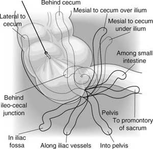
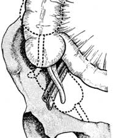

Appendix
Anatomy
Gross
1. Only humans, certain apes and wombats have an appendix.
- is not only there to train wannabe surgeons but is a lymphoid organ
where B
lymphocytes
mature
- and it secretes iGs into gut.
- but we can still do just fine without it.
2. Midgut derivative with ileum and ascending colon.
- is the undeveloped distal end of the larger caecum seen in many
animals.
- initially projects from apex of caecum, later posteromedial wall
(constant)
- is always at the confluence of the tinea coli (form its muscle coat)
- typical tube by 2 yrs.
- may be obliterated in aging.
3. At birth is short and broad
- continued caecal growth usually rotates the appendix to a retrocaecal
position.
- base gradually rotates medially 2cm inferior and posterior to
ileocaecal valve.
4. Although base constant, tip variale.
- most commonly retrocaecal (65% - Sabiston)
- next most commonly heading toward pelvis (30%)
- subcaecal, paraileal (perhaps most common in abscence of disease)
- retroperitoneal 2%

--> hence its myriad of symptoms.
5. Surface usually anatomy correlates to McBurney's Pt, one third
on line
from R ASIS to umbilicus.
- rarely the caecum does not migrate during devlopment to RLQ -->
found near gallbladder or in situs inversus, in the LIF.
- caecum is of slightly variable position in RIF also.

6. Average length 7.5-10cm.
- varies from 2-22cm
- volume of lumen normally only 0.1 ml.
7. Mesoappendix (variable extent), arises from mesentry of terminal
ileum.
- contains appendicular artery in its free border
- this is an end-artery.
- this arises
from posterior ileal branch of ileocolic artery, runs from behind
terminal ileum.
- also contains a number of lymphatic channels and possibly an
accessory appendicular artery.
- NB lymph drainage is as-for-caecum, not ileum.
8. Bloodless fold of Treves
- peritoneal fold funning anterior appendix to ileum
9. Recesses
- retrocaecal
- also the caecal folds hide the ileocaecal recesses (see Netter plate
264)
Microscopic
Tube with mucosa, submucosa, muscular and serosal
layers.
- lumen has folds of colonic type columnar mucous membrane.
- but with many lymphoid
masses in submucosa making lumen
irregular.
- prominence of lymph tissue is proportional to development of
appendicitis.
--> eg both peak at around teenage years
Crypts are present but non-numerous, with Kultshcitzsky Cells
- appdx is most
frequent origin site for Carcinoid tumours.
References
Lasts 10th
Sabiston 17th
Schwartz.